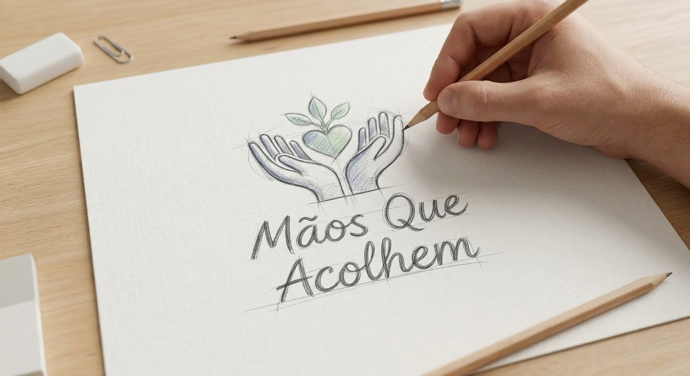

Nossas Frentes de Atuação
Conheça as ações contínuas que desenvolvemos para apoiar e empoderar nossa comunidade local.

Como Ajudar Financeiramente
Sua doação financeira mantém nossos projetos vivos e compra suprimentos essenciais. Contribua através de nossos canais oficiais:
- Chave Pix (CNPJ): 12.345.678/0001-99
- Banco do Brasil: Agência 1234-5 | Conta Corrente: 67890-1
Seja um Voluntário
Doe seu tempo e suas habilidades para transformar realidades junto conosco.
- Requisitos: Ter mais de 18 anos e disponibilidade de 4 horas semanais.
- Áreas necessitadas: Reforço escolar, triagem de doações e apoio logístico.
Campanha de Contribuições Materiais
Arrecadamos permanentemente itens básicos para distribuição imediata às famílias cadastradas.
- Materiais elegíveis: Alimentos não perecíveis, agasalhos, cobertores e kits de higiene.
- Ponto de coleta: Entregas diretamente em nossa sede institucional.